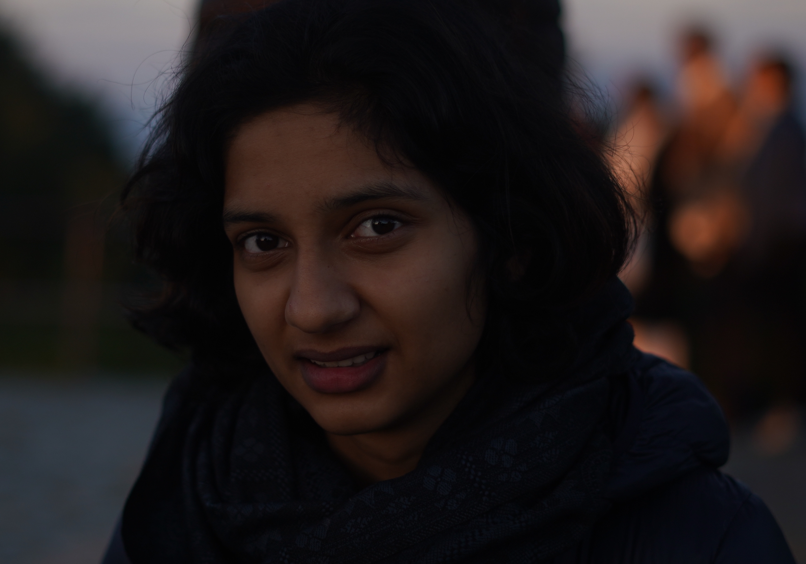

About
I am an enthusiastic Computer Science Student eager to learn new skills and information. I apply education and personal talents to learn new subjects in detail and delve into challenging topics. I collaborate well on group projects and prepare diligently for assignments. In future, I intend to connect Computer science education with Gender studies, research and development.